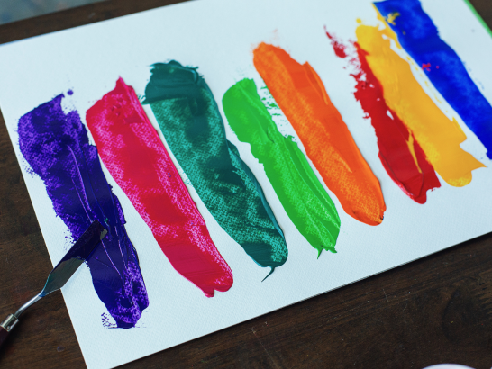

Colour Theory
Color theory is a field of study that explores how colors interact, how they can be combined, and the effects they produce in various contexts, such as art, design, and visual communication. It encompasses principles and concepts related to the perception, mixing, and application of colors. Color theory helps individuals understand how to use colors effectively to achieve specific artistic, aesthetic, and communicative goals.
Primary, Secondary & Tertiary
Primary Colors: Primary colors are the foundation of all other colors and cannot be created by mixing other colors. In traditional color theory, primary colors are red, blue, and yellow.
Secondary Colors: Secondary colors are created by mixing equal parts of two primary colors. The secondary colors are green (yellow + blue), orange (red + yellow), and purple (red + blue).
Tertiary Colors: Tertiary colors are the result of mixing a primary color with a neighboring secondary color. For example, mixing red (primary) with orange (secondary) creates red-orange, which is a tertiary color.
Understanding these basic principles of color theory is essential for artists, designers, and anyone working with colors to create visually appealing and effective compositions. It forms the foundation for more advanced color theory concepts and techniques.
- Understanding color harmonies, like complementary, analogous, and triadic color schemes, helps create visually pleasing combinations.
- Paying attention to the value (lightness/darkness) of colors is crucial for creating contrast and defining shapes in a composition.
- Different colors can evoke specific emotions and reactions, making it essential to consider the psychological effects of color choices in design and communication.
Important Aspects
Basics
Learn the essential principles of color theory, from primary and secondary colors to key concepts like hue, saturation, and brightness.
Read moreColor Mixing
Explore how colors combine in various systems and understand the difference between additive and subtractive color mixing.
Read moreColor Psychology
Discover how colors can influence emotions, behavior, and perception in branding, marketing, and design.
Read moreColor in Art and Design
Delve into the use of color in art movements, famous artworks, and practical design applications.
Read moreColor Schemes and Harmonies
Explore different color schemes and get guidelines for creating harmonious color palettes for diverse design contexts.
Read moreColor in Nature and Science
Uncover the role of color in the natural world, from animal adaptations to scientific principles like the electromagnetic spectrum.
Read more